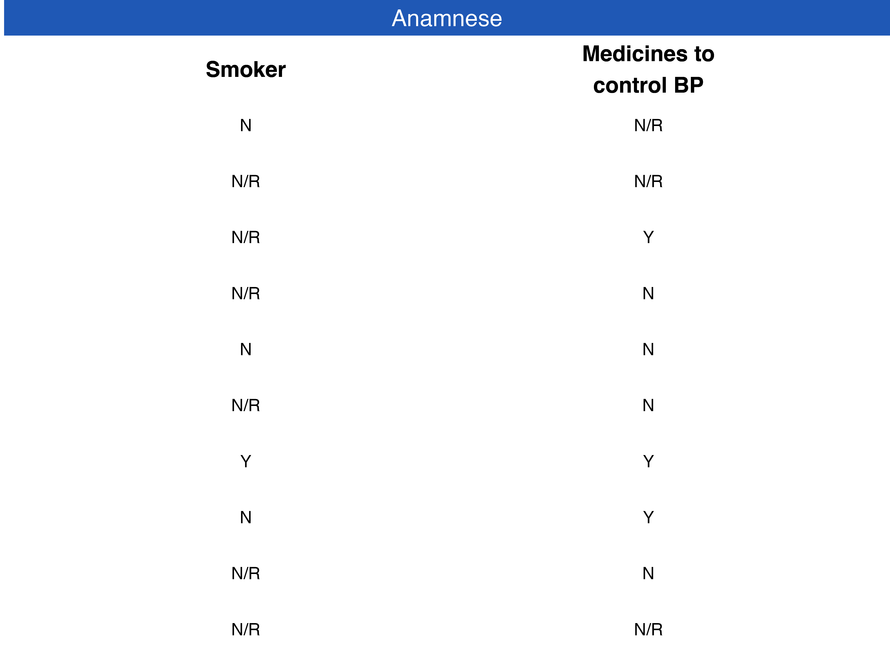
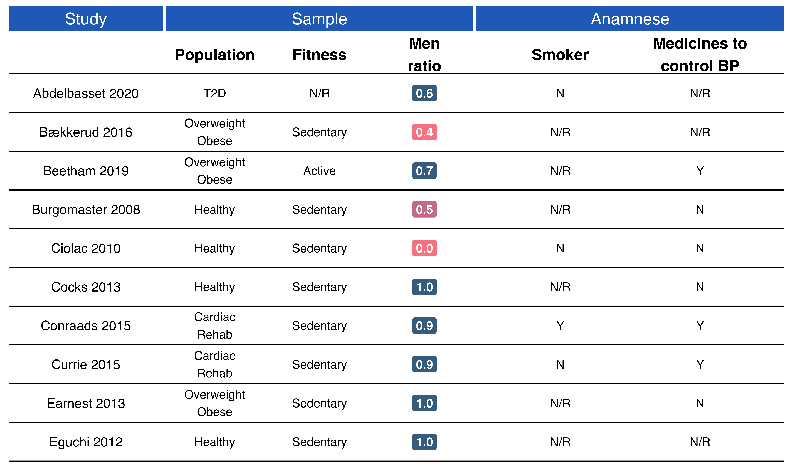
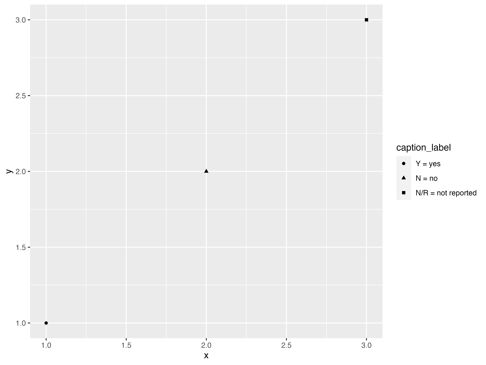

I first found out about the GOfER diagram (Graphical Overview for Evidence Reviews) in this tweet from Will Stahl-Timmins:
The BMJ's first ever GOfER diagram (Graphical Overview for Evidence Reviews) today, in this systematic review of the effects of eating breakfast on weight loss: https://t.co/OlHIQ5mtwd #BMJInfographic pic.twitter.com/3jIDvEYOAJ
— Will Stahl-Timmins (@will_s_t) January 31, 2019
I was quite impressed with this diagram. It was the perfect replacement for the rather boring “Table 1” in meta-analyses. So I decided that I wanted to have something similar to my meta-analysis paper. Because, why not? A little bit of googling got me to this website. This is the software that Will developed from his thesis. The software is quite nice and with a quick read in its manual, you have your first GOfER. There was one problem for me, though. I had a rather large amount of data, and the software doesn’t support copy and pasting functionality. Therefore, if I had to add or change things around it was a quite tedious work. Therefore, I contacted Will to check whether I could understand a little better how the data is handle by the software in the background. I wanted to develop a way I could prepare the data in R and then perhaps exported it as a .json file and voilá!
In the meantime I was writing Will (it was around December of 2019), Thomas Lin Pedersen was preparing a CRAN release for the awesome {patchwork} R package. When I saw this vignette was when I realized: I can make a GOfER entirely in R using ggplot2 and patchwork!!!! This layout functionality was the perfect feature that I needed to make it work the way I thought it could be done!
After two days of work, this is the result that you now see in the paper:

You can of course read the source code to check how it is done, but I am going to also walk you through here to explain a little better, so you can also build one if you want.
Steps to build a GOfER
1) Prepare your data
Please, take a look at metabolic_gofer to see the data structure being used in to build the GOfER.
Your first step should be to define in how many pages you want to display your information, given the amount of details from each study you want to provide. For this vignette, we are going to make an example with 10 studies, but our original GOfER had 28 studies in one page. Therefore, the first step is to filter these data.
library(metabolic) data_gofer <- metabolic_gofer %>% ## arrange study and groups to show in the correct order in the graph dplyr::arrange(dplyr::desc(study), dplyr::desc(groups)) %>% dplyr::mutate(study = forcats::as_factor(study)) %>% tidyr::nest_legacy(-study) %>% ## get the first 10 studies tail(10) ## here we get the number of studies + 1 to show the lines in the graph ## since we have 10 studies, this is simply 10 + 1 n_lines <- 10 + 1 print(data_gofer, n = Inf) #> # A tibble: 10 x 2 #> study data #> <fct> <list> #> 1 Eguchi 2012 <tibble [2 × 32]> #> 2 Earnest 2013 <tibble [2 × 32]> #> 3 Currie 2015 <tibble [2 × 32]> #> 4 Conraads 2015 <tibble [2 × 32]> #> 5 Cocks 2013 <tibble [2 × 32]> #> 6 Ciolac 2010 <tibble [2 × 32]> #> 7 Burgomaster 2008 <tibble [2 × 32]> #> 8 Beetham 2019 <tibble [2 × 32]> #> 9 Bækkerud 2016 <tibble [2 × 32]> #> 10 Abdelbasset 2020 <tibble [2 × 32]>
Before we begin plotting…
I am going to set a new ggplot2 theme. Here we are setting common settings for a theme that we are going to use in every plot. Some settings differ depending if the plot has only text or if there is line plot, for example.
theme_gofer <- function(strip_background = "#1f58b5", margins = c(0, 0, 0, 0), line_plot = FALSE) { if(line_plot) { theme_light() + theme( panel.grid.major = element_line(size = 0.5, linetype = 'solid', colour = "black"), panel.grid.minor = element_blank(), axis.text.y = element_text(size = 8), panel.background = element_blank(), panel.border = element_blank(), plot.background = element_blank(), plot.margin = unit(margins, "cm"), axis.title.y = element_blank(), strip.background = element_rect(fill = strip_background), strip.text = element_text(size = 15, colour = "white"), legend.position = "none" ) } else { theme_light() + theme( panel.background = element_blank(), panel.border = element_blank(), panel.grid = element_blank(), plot.background = element_blank(), plot.margin = unit(margins, "cm"), axis.title = element_blank(), axis.text = element_blank(), axis.ticks = element_blank(), strip.background = element_rect(fill = strip_background), strip.text = element_text(size = 15, colour = "white"), legend.position = "none" ) } }
2) Build the lines to separate the studies - the basic grid plot
For the plot, the first step is to build the basic grid, which is the lines that will separate each study.
p_grid <- data_gofer %>% # this is a hack to show a white space between the facet and the plot # this is needed to be able to have subheadings dplyr::add_row(study = NA) %>% ggplot() + ## here although we do not plot the study labels yet, this is needed to ensure ## that plots will be aligned across panels since they always share the same x-axis (study) ggfittext::geom_fit_text(aes(x = study, y = 0, label = ""), place = "left", reflow = TRUE, fontface = "plain", position = position_dodge(width = 0.7), show.legend = FALSE, na.rm = TRUE) + geom_vline(xintercept = seq(1, n_lines, 1) - 0.5) + theme_void() + coord_flip() p_grid
3) Study panel
Here is when the studies (Author and Year) are plotted. Also, the colorful headers at the top will be created with ggplot2::facet_wrap().
p_studies <- data_gofer %>% # this is a hack to show a white space between the facet and the plot # this is needed to be able to have subheadings dplyr::add_row(study = NA) %>% ggplot() + ggfittext::geom_fit_text(aes(x = study, y = 0, label = study), place = "centre", reflow = TRUE, fontface = "plain", show.legend = FALSE, na.rm = TRUE) + coord_flip() + facet_wrap(~ "Study") + theme_gofer() p_studies
Current GOfER state - Control layout with patchwork
layout <- c( area(t = 1, l = 1, b = 3, r = 2), # p_grid (the `r` argument will be adjusted as we go.. it controls the width of the plot) area(t = 1, l = 1, b = 3, r = 1) # p_studies ) p_grid + p_studies + plot_layout(nrow = 1, design = layout)
4) Sample panel
Here we plot general characteristics from the sample of each study, such as population, fitness, and men ratio.
Data preparation
Here some data preparation is needed to define color of labels and y-axis placement.
## data preparation data_sample <- data_gofer %>% tidyr::unnest_legacy() %>% dplyr::select(study, dplyr::starts_with("sample")) %>% dplyr::mutate(sample_men_ratio = round(sample_men_ratio, digits = 1), fill = dplyr::case_when( sample_men_ratio > 0.5 ~ "#355c7d", sample_men_ratio == 0.5 ~ "#c06c84", sample_men_ratio < 0.5 ~ "#f67280" ), sample_men_ratio = sprintf(sample_men_ratio, fmt = '%#.1f')) %>% dplyr::distinct_all() %>% dplyr::arrange(dplyr::desc(study)) %>% # this is a hack to show a white space between the facet and the plot # this is needed to be able to have subheadings dplyr::add_row(study = NA) %>% dplyr::mutate( dummy_population = 0.5, dummy_fitness = 2, dummy_men_ratio = 3.5 ) data_sample #> # A tibble: 13 x 8 #> study sample_populati… sample_fitness sample_men_ratio fill dummy_population #> <fct> <chr> <chr> <chr> <chr> <dbl> #> 1 Abde… "T2D" N/R 0.5 #c06… 0.5 #> 2 Abde… "T2D" N/R 0.6 #355… 0.5 #> 3 Bækk… "Overweight\nOb… Sedentary 0.4 #f67… 0.5 #> 4 Beet… "Overweight\nOb… Active 0.8 #355… 0.5 #> 5 Beet… "Overweight\nOb… Active 0.7 #355… 0.5 #> 6 Burg… "Healthy" Sedentary 0.5 #c06… 0.5 #> 7 Ciol… "Healthy" Sedentary 0.0 #f67… 0.5 #> 8 Cock… "Healthy" Sedentary 1.0 #355… 0.5 #> 9 Conr… "Cardiac\nRehab" Sedentary 0.9 #355… 0.5 #> 10 Curr… "Cardiac\nRehab" Sedentary 0.9 #355… 0.5 #> 11 Earn… "Overweight\nOb… Sedentary 1.0 #355… 0.5 #> 12 Eguc… "Healthy" Sedentary 1.0 #355… 0.5 #> 13 <NA> <NA> <NA> <NA> <NA> 0.5 #> # … with 2 more variables: dummy_fitness <dbl>, dummy_men_ratio <dbl>
p_sample <- data_sample %>% ggplot() + ## Population geom_text(aes(x = study, y = dummy_population, label = sample_population), fontface = "plain", show.legend = FALSE, na.rm = TRUE) + ## Population subheading geom_text(aes(x = NA, y = dummy_population), label = "Population", size = 5, fontface = "bold", show.legend = FALSE, na.rm = TRUE) + ## Fitness geom_text(aes(x = study, y = dummy_fitness, label = sample_fitness), fontface = "plain", show.legend = FALSE, na.rm = TRUE) + ## Fitness subheading geom_text(aes(x = NA, y = dummy_fitness), label = "Fitness", size = 5, fontface = "bold", show.legend = FALSE, na.rm = TRUE) + ## Men Ratio geom_label(aes(x = study, y = dummy_men_ratio, label = sample_men_ratio, fill = fill), colour = "white", size = 4, fontface = "bold", na.rm = TRUE) + ## Men Ratio subheading geom_text(aes(x = NA, y = dummy_men_ratio), label = "Men\nratio", size = 5, fontface = "bold", show.legend = FALSE, na.rm = TRUE) + coord_flip() + scale_fill_identity() + ## the following will ensure that there is some extra space at the beginning and at the end ylim(0, 4) + facet_wrap(~ "Sample") + theme_gofer() p_sample
Current GOfER state - Control layout with patchwork
layout <- c( area(t = 1, l = 1, b = 3, r = 3), # p_grid (the `r` argument will be adjusted as we go.. it controls the width of the plot) area(t = 1, l = 1, b = 3, r = 1), # p_studies area(t = 1, l = 2, b = 3, r = 3) # p_sample ) p_grid + p_studies + p_sample + plot_layout(nrow = 1, design = layout)
5) Anamnese panel
Here we plot information on whether participants in the studies were smokers and were taking medicines to control blood pressure.
## data preparation data_anamnese <- data_gofer %>% tidyr::unnest_legacy() %>% dplyr::select(study, dplyr::starts_with("anamnese")) %>% # this is a hack to show a white space between the facet and the plot # this is needed to be able to have subheadings dplyr::add_row(study = NA) %>% dplyr::mutate( dummy_smoker = 1, dummy_medicines = 2 ) %>% dplyr::distinct_all() data_anamnese #> # A tibble: 11 x 5 #> study anamnese_smoker anamnese_medicines_t… dummy_smoker dummy_medicines #> <fct> <chr> <chr> <dbl> <dbl> #> 1 Eguchi 20… N/R N/R 1 2 #> 2 Earnest 2… N/R N 1 2 #> 3 Currie 20… N Y 1 2 #> 4 Conraads … Y Y 1 2 #> 5 Cocks 2013 N/R N 1 2 #> 6 Ciolac 20… N N 1 2 #> 7 Burgomast… N/R N 1 2 #> 8 Beetham 2… N/R Y 1 2 #> 9 Bækkerud … N/R N/R 1 2 #> 10 Abdelbass… N N/R 1 2 #> 11 <NA> <NA> <NA> 1 2
p_anamnese <- data_anamnese %>% ggplot() + geom_text(aes(x = study, y = dummy_smoker, label = anamnese_smoker), fontface = "plain", position = position_dodge2(width = 1), show.legend = FALSE, na.rm = TRUE) + geom_text(aes(x = NA, y = dummy_smoker), label = "Smoker", size = 5, fontface = "bold", show.legend = FALSE, na.rm = TRUE) + geom_text(aes(x = study, y = dummy_medicines, label = anamnese_medicines_to_control_BP), fontface = "plain", position = position_dodge2(width = 1), show.legend = FALSE, na.rm = TRUE) + geom_text(aes(x = NA, y = dummy_medicines), label = "Medicines to\ncontrol BP", size = 5, fontface = "bold", show.legend = FALSE, na.rm = TRUE) + coord_flip() + ylim(0.5, 2.5) + facet_wrap(~ "Anamnese") + theme_gofer() p_anamnese

Current GOfER state - Control layout with patchwork
layout <- c( area(t = 1, l = 1, b = 3, r = 5), # p_grid (the `r` argument will be adjusted as we go.. it controls the width of the plot) area(t = 1, l = 1, b = 3, r = 1), # p_studies area(t = 1, l = 2, b = 3, r = 3), # p_sample area(t = 1, l = 4, b = 3, r = 5) # p_anamnese ) p_grid + p_studies + p_sample + p_anamnese + plot_layout(nrow = 1, design = layout)

In panels like Anamnese you might also want to display a legend for acronyms used. You may want to explicitly tell the reader that:
Y = Yes
N = No
N/R = Not Reported
Therefore, the easiest way of achieving this is to create a “helper plot”, which we are going to use only its legends. Placing a legend in your GOfER is done following these steps:
- Create the helper plot
- When combining the plots with
patchwork, plot the helper plot first, so it will get hidden by the others. - Use the
guides = "keep"argument inpatchwork::plot_layout.
5.1) Creating the helper plot
## create some data data_caption_label <- dplyr::tibble( x = 1:3, y = 1:3, caption_label = c("Y = yes", "N = no", "N/R = not reported") ) %>% dplyr::mutate(caption_label = forcats::as_factor(caption_label))
Basic plot
data_caption_label %>% ggplot() + geom_point(aes(x = x, y = y, shape = caption_label))

Final plot
p_caption <- data_caption_label %>% ggplot() + geom_point(aes(x = x, y = y, shape = caption_label)) + geom_rect(aes(xmin = -Inf, xmax = Inf, ymin = -Inf, ymax = Inf), fill = "white") + theme_void() + labs(shape = "Note:")+ theme(legend.position = "bottom", legend.direction = "vertical") + guides(shape = guide_legend(override.aes = list(shape=''))) p_caption
5.2) Combine it with patchwork
layout <- c( area(t = 1, l = 4, b = 3, r = 5), # p_caption (here you choose where to place the legend, since it is under anamnese in this example, we use `l = 4` and `r = 5`) area(t = 1, l = 1, b = 3, r = 5), # p_grid (the `r` argument will be adjusted as we go.. it controls the width of the plot) area(t = 1, l = 1, b = 3, r = 1), # p_studies area(t = 1, l = 2, b = 3, r = 3), # p_sample area(t = 1, l = 4, b = 3, r = 5) # p_anamnese ) ## now plot `p_caption` first p_caption + p_grid + p_studies + p_sample + p_anamnese + plot_layout(nrow = 1, design = layout, guides = "keep")
6) Age panel
Here we plot the median from the reported age of the groups in each study.
## data preparation data_age <- data_gofer %>% tidyr::unnest_legacy() %>% dplyr::select(study, groups, age) %>% dplyr::group_by(study) %>% dplyr::summarise(age_median = stats::median(age)) %>% # this is a hack to show a white space between the facet and the plot # this is needed to be able to have subheadings dplyr::add_row(study = NA) data_age #> # A tibble: 11 x 2 #> study age_median #> <fct> <dbl> #> 1 Eguchi 2012 50.8 #> 2 Earnest 2013 48.5 #> 3 Currie 2015 64.5 #> 4 Conraads 2015 58.4 #> 5 Cocks 2013 21.5 #> 6 Ciolac 2010 25.5 #> 7 Burgomaster 2008 23.5 #> 8 Beetham 2019 61.8 #> 9 Bækkerud 2016 40 #> 10 Abdelbasset 2020 54.6 #> 11 <NA> NA
p_age <- data_age %>% ggplot(aes(x = study, y = age_median, colour = age_median, label = as.integer(age_median))) + geom_segment(aes(x = study, y = 0, xend = study, yend = age_median), colour = "black", na.rm = TRUE) + geom_point(size = 9, na.rm = TRUE) + geom_text(color = "white", size = 4, fontface = "bold", na.rm = TRUE) + ## Hack to delete lines above geom_rect(aes(xmin = n_lines - 0.45, xmax = Inf, ymin = -Inf, ymax = Inf), fill = "white", colour = "white") + scale_color_gradient(low = "#3a6e7f", high = "#38c2a4") + coord_flip() + scale_x_discrete(breaks = NULL) + ylim(0, 70) + labs(y = "Age (yr)") + facet_wrap(~ "Age") + theme_gofer(strip_background = "#ff6581", margins = c(0, 0, 0, 0.1), line_plot = TRUE) p_age

Current GOfER state - Control layout with patchwork
layout <- c( area(t = 1, l = 4, b = 3, r = 5), # p_caption (here you choose where to place the legend, since it is under anamnese in this example, we use `l = 4` and `r = 5`) area(t = 1, l = 1, b = 3, r = 6), # p_grid (the `r` argument will be adjusted as we go.. it controls the width of the plot) area(t = 1, l = 1, b = 3, r = 1), # p_studies area(t = 1, l = 2, b = 3, r = 3), # p_sample area(t = 1, l = 4, b = 3, r = 5), # p_anamnese area(t = 1, l = 6, b = 3, r = 6) # p _age ) p_caption + p_grid + p_studies + p_sample + p_anamnese + p_age + plot_layout(nrow = 1, design = layout, guides = "keep")
Final notes
I guess by now you could have a good idea of the thought behind building a GOfER with ggplot2 and patchwork. I hope this little tutorial can encourage others conducting a meta-analysis to build something similar for their own data. It certainly looks better than having this information in a table!
Last, but not least, I would like to express my gratitude to Will Stahl-Timmins for being such a great inspiration that led me to buillding a GOfER in R, and to Thomas Lin Pedersen and Hadley Wickham for building the fantastic patchwork and ggplot2 that made this possible!